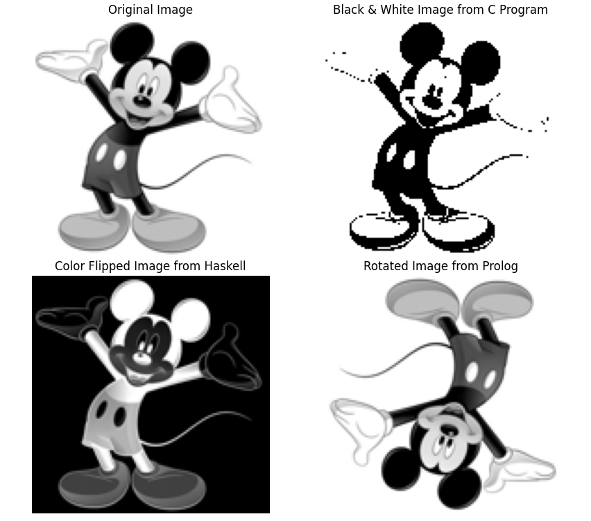

A Python wrapper script that integrates with MATLAB, C, Haskell, and Prolog to manipulate images
Results Gallery
Original ImageC - Grayscale ThresholdHaskell - InvertedProlog - 180° Rotation

Final Combined Output
Project Overview
This project demonstrates multi-language programming and image processing techniques by creating a Python wrapper that orchestrates image manipulation operations across four different programming languages: MATLAB, C, Haskell, and Prolog.
Technologies Used
PythonMATLABCHaskellProlog
Key Features
Image Resizing: MATLAB code resizes photos and converts them to 1D arrays
Grayscale Conversion: C program converts images to grayscale
Value Flipping: Haskell program flips the pixel values